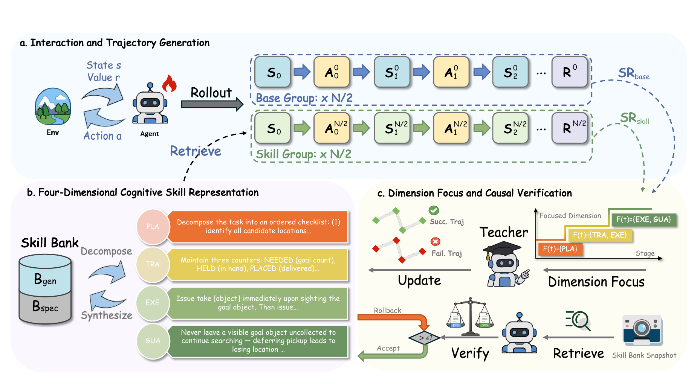

01
能力错位 · Competence Misalignment
失败会随训练阶段迁移：早期常见规划与探索错误，中期转向状态丢失和动作序列，后期集中在细粒度约束。
复合失败→整段技能重写→无法定位瓶颈
外部 Skill Bank 能减少长程探索成本，但已有方法往往把技能当作整段文本更新，也默认策略一开始就会使用这些技能。 A²SE 的出发点是：技能内容和优化信号都必须与 Agent 当前能力对齐。
失败会随训练阶段迁移：早期常见规划与探索错误，中期转向状态丢失和动作序列，后期集中在细粒度约束。
训练早期 Skill Group 往往弱于 Base Group。GRPO 的组内相对优势会把技能轨迹判成“更差”，反而训练模型忽略技能提示。
A²SE 将同一批任务的 Rollout 等分为 Skill Group 与 Base Group：一半注入检索技能，一半不注入。 两组表现既用于估计能力，也用于修正早期奖励偏差。

负责目标分解、搜索顺序和子目标调度，解决 Agent 不知道先做什么、去哪里找的问题。
先枚举候选位置，按空间顺序逐一搜索；已确认为空的位置不重复访问。
能力值由 Skill/Base 两组成功率的 EMA 平滑组合得到。阈值不是用来给模型贴标签，而是控制本轮教师模型允许更新哪些技能维度。
成功率仍低，失败多来自目标分解和探索不足。本阶段优先更新 D-PLAN。
每次演化前保存快照；更新后固定策略参数，在相同任务初始状态上重新 Rollout。若某任务类型成功率下降超过容忍阈值，仅回滚该类型对应的更新。
CASR 根据 Skill Group 与 Base Group 的差距动态调整补偿：放大少量成功技能轨迹，减轻早期失败惩罚；当技能组稳定领先后，补偿自然衰减，恢复标准 GRPO。
主实验采用 Qwen2.5-7B-Instruct，在没有冷启动 SFT 的条件下直接进行 RL。 下图展示同一骨干模型下的成功率；WebShop 另取得 91.2 的任务得分。
换回 flat skills 后，ALFWorld 从 88.3 降至 79.7，WebShop 从 79.7 降至 68.8。没有维度接口，归因、定向更新和验证都无法精确进行。
WebShop 中约 34% 的任务类型更新被回滚；移除因果验证后成功率降至 62.5，说明“听起来合理”的技能也可能污染策略。
补偿由 Skill/Base 差距驱动；技能组追上后系数衰减。移除 CASR 后，两个基准均下降 3.9 pp。
为通用搬运技能补充执行前置条件，并增加 “Nothing happens” 后重新导航的恢复规则。它补齐了真实执行缺口。
教师模型要求遇到近似物体就直接忽略并继续搜索，反而与已有检查规则冲突，使 Heat 任务成功率下降 0.25，最终被回滚。
A²SE 的额外成本来自周期性教师模型调用与验证，而不是每次策略更新；当前验证评估一次演化步骤的净效应，不穷举所有技能子集组合。对于缺少基础网页导航能力的小模型，WebShop 仍可能需要 SFT warm start。